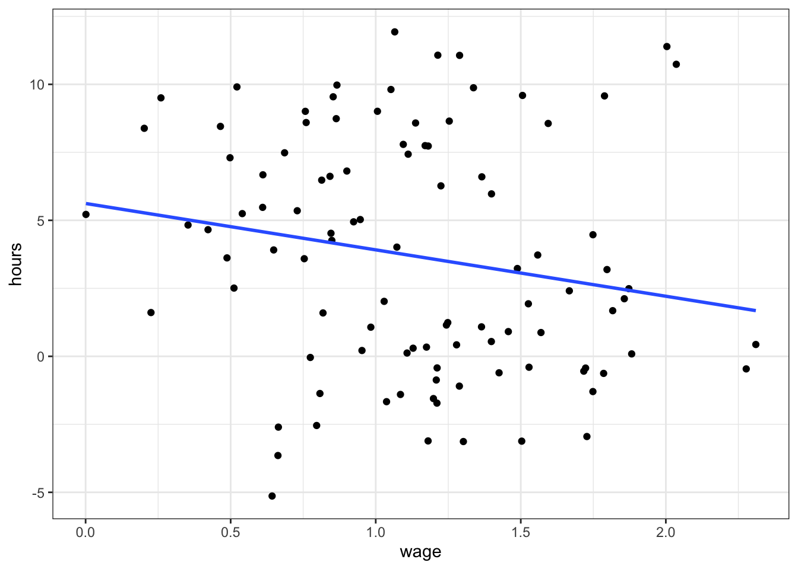

Chapter 5 Categorial Variables
Up until now, we have encountered only examples with continuous variables \(x\) and \(y\), that is, \(x,y \in \mathbb{R}\), so that a typical observation could have been \((y_i,x_i) = (1.5,5.62)\). There are many situations where it makes sense to think about the data in terms of categories, rather than continuous numbers. For example, whether an observation \(i\) is male or female, whether a pixel on a screen is black or white, and whether a good was produced in France, Germany, Italy, China or Spain are all categorical classifications of data.
Probably the simplest type of categorical variable is the binary, boolean, or just dummy variable. As the name suggests, it can take on only two values, 0 and 1, or TRUE and FALSE.
5.1 The Binary Regressor Case
Even though this is an extremely parsimonious way of encoding that, it is a very powerful tool that allows us to represent that a certain observation \(i\) is a member of a certain category \(j\). For example, let’s imagine we have income data on males and females, and we would create a variable called is.male that is TRUE whenever \(i\) is male, FALSE otherwise, and similarly for women. For example, to encode whether subject \(i\) is male, one could do this:
and similarly for females, we’d have
\[\begin{align*} \text{is.female}_i &= \begin{cases} 1 & \text{if }i\text{ is female} \\ 0 & \text{if }i\text{ is not female}. \\ \end{cases} \\ \end{align*}\]By definition, we have just introduced a linear dependence into our dataset. It will always be true that \(\text{is.male}_i + \text{is.female}_i = 1\). This is because dummy variables are based on data being mutually exclusively categorized - here, you are either male or female.5 This should immediately remind you of section 4.2 where we introduced multicolinearity. A regression of income on both of our variables like this
\[ y_i = b_0 + b_1 \text{is.female}_i + b_2 \text{is.male}_i + e_i \] would be invalid because of perfect colinearity between \(\text{is.female}_i\) and \(\text{is.male}_i\). The solution to this is pragmatic and simple:
In dummy variable regressions, we remove one category from the regression (for example here: is.male) and call it the reference category. The effect of being male is absorbed in the intercept. The coefficient on the remaining categories measures the difference in mean outcome with respect to the reference category.
Now let’s try this out. We start by creating the female indicator as above,
\[ \text{is.female}_i = \begin{cases} 1 & \text{if }i\text{ is female} \\ 0 & \text{if }i\text{ is not female}. \\ \end{cases} \] and let’s suppose that \(y_i\) is a measure of \(i\)’s annual labor income. Our model is
\[\begin{equation} y_i = b_0 + b_1 \text{is.female}_i + e_i \tag{5.1} \end{equation}\]and here is how we estimate this in R:
# x = sample(x = c(0, 1), size = n, replace = T)
dta$is.female = factor(x) # convert x to factor
dummy_reg = lm(y~is.female,dta)
summary(dummy_reg)#OUT>
#OUT> Call:
#OUT> lm(formula = y ~ is.female, data = dta)
#OUT>
#OUT> Residuals:
#OUT> Min 1Q Median 3Q Max
#OUT> -2.4253 -0.6551 0.1321 0.7217 2.8129
#OUT>
#OUT> Coefficients:
#OUT> Estimate Std. Error t value Pr(>|t|)
#OUT> (Intercept) 2.0568 0.2125 9.680 7.27e-13 ***
#OUT> is.female1 -3.0169 0.3203 -9.418 1.74e-12 ***
#OUT> ---
#OUT> Signif. codes: 0 '***' 0.001 '**' 0.01 '*' 0.05 '.' 0.1 ' ' 1
#OUT>
#OUT> Residual standard error: 1.124 on 48 degrees of freedom
#OUT> Multiple R-squared: 0.6489, Adjusted R-squared: 0.6416
#OUT> F-statistic: 88.7 on 1 and 48 DF, p-value: 1.737e-12Notice that R displays the level of the factor to which coefficient \(b_1\) belongs here, i.e. is.female1 means this coefficient is on level is.female = 1 - the reference level is is.female = 0, and it has no separate coefficient. Also interesting is that \(b_1\) is equal to the difference in conditional means between male and female
\[b_1 = E[y|\text{is.female}=1] - E[y|\text{is.female}=0]=-3.0169.\]
A dummy variable measures the difference or the offset in the mean of the response variable, \(E[y]\), conditional on \(x\) belonging to some category - relative to a baseline category. In our artificial example, the coefficient \(b_1\) informs us that women earn on average 3.756 units less than men.
It is instructive to reconsider this example graphically:
Figure 5.1: regressing \(y \in \mathbb{R}\) on \(\text{is.female}_i \in \{0,1\}\). The blue line is \(E[y]\), the red arrow is the size of \(b_1\). Which is the same as the slope of the regression line in this case and the difference in conditional means!
In figure 5.1 we see that this regression simplifies to the straight line connecting the mean, or the expected value of \(y\) when \(\text{is.female}_i = 0\), i.e. \(E[y|\text{is.female}_i=0]\), to the mean when \(\text{is.female}_i=1\), i.e. \(E[y|\text{is.female}_i=1]\). It is useful to remember that the unconditional mean of \(y\), i.e. \(E[y]\), is going to be the result of regressing \(y\) only on an intercept, illustrated by the blue line. This line will always lie in between both conditional means. As indicated by the red arrow, the estimate of the coefficient on the dummy, \(b_1\), is equal to the difference in conditional means for both groups. You should look at our app now to deepen your understanding of what’s going on here:
library(ScPoEconometrics)
launchApp("reg_dummy")5.2 Dummy and Continuous Variables
What happens if there are more predictors than just the dummy variable in a regression? For example, what if instead we had
\[\begin{equation} y_i = b_0 + b_1 \text{is.female}_i + b_2 \text{exper}_i + e_i \tag{5.2} \end{equation}\]where \(\text{exper}_i\) would measure years of experience in the labor market? As above, the dummy variable acts as an intercept shifter. We have
\[\begin{equation} y_i = \begin{cases} b_0 + b_1 + b_2 \times \text{exper}_i + e_i & \text{if is.female=1} \\ b_0 + \hphantom{b_1} +b_2 \times \text{exper}_i + e_i & \text{if is.female=0} \end{cases} \end{equation}\]so that the intercept is \(b_0 + b_1\) for women but \(b_0\) for men. We will see this in the real-world example below, but for now let’s see the effect of switching the dummy on and off in this app:
library(ScPoEconometrics)
launchApp("reg_dummy_example")5.3 Categorical Variables in R: factor
R has extensive support for categorical variables built-in. The relevant data type representing a categorical variable is called factor. We encountered them as basic data types in section 1.8 already, but it is worth repeating this here. We have seen that a factor categorizes a usually small number of numeric values by labels, as in this example which is similar to what I used to create regressor is.female for the above regression:
is.female = factor(x = c(0,1,1,0), labels = c(FALSE,TRUE))
is.female#OUT> [1] FALSE TRUE TRUE FALSE
#OUT> Levels: FALSE TRUEYou can see the result is a vector object of type factor with 4 entries, whereby 0 is represented as FALSE and 1 as TRUE. An other example could be if we wanted to record a variable sex instead, and we could do
sex = factor(x = c(0,1,1,0), labels = c("male","female"))
sex#OUT> [1] male female female male
#OUT> Levels: male femaleYou can see that this is almost identical, just the labels are different.
5.3.1 More Levels
We can go beyond binary categorical variables such as TRUE vs FALSE. For example, suppose that \(x\) measures educational attainment, i.e. it is now something like \(x_i \in \{\text{high school,some college,BA,MSc}\}\). In R parlance, high school, some college, BA, MSc are the levels of factor \(x\). A straightforward extension of the above would dictate to create one dummy variable for each category (or level), like
but you can see that this is cumbersome. There is a better solution for us available:
factor(x = c(1,1,2,4,3,4),labels = c("HS","someCol","BA","MSc"))#OUT> [1] HS HS someCol MSc BA MSc
#OUT> Levels: HS someCol BA MScNotice here that R will apply the labels in increasing order the way you supplied it (i.e. a numerical value 4 will correspond to “MSc”, no matter the ordering in x.)
5.3.2 Log Wages and Dummies
The above developed factor terminology fits neatly into R’s linear model fitting framework. Let us illustrate the simplest use by way of example.
Going back to our wage example, let’s say that a worker’s wage depends on their education as well as their sex:
\[\begin{equation} \ln w_i = b_0 + b_1 educ_i + b_2 female_i + e_i \tag{5.3} \end{equation}\]data("wage1", package = "wooldridge")
wage1$female = as.factor(wage1$female) # convert 0-1 to factor
lm_w = lm(lwage ~ educ, data = wage1)
lm_w_sex = lm(lwage ~ educ + female, data = wage1)
stargazer::stargazer(lm_w,lm_w_sex,type = "html")| Dependent variable: | ||
| lwage | ||
| (1) | (2) | |
| educ | 0.083*** | 0.077*** |
| (0.008) | (0.007) | |
| female1 | -0.361*** | |
| (0.039) | ||
| Constant | 0.584*** | 0.826*** |
| (0.097) | (0.094) | |
| Observations | 526 | 526 |
| R2 | 0.186 | 0.300 |
| Adjusted R2 | 0.184 | 0.298 |
| Residual Std. Error | 0.480 (df = 524) | 0.445 (df = 523) |
| F Statistic | 119.582*** (df = 1; 524) | 112.189*** (df = 2; 523) |
| Note: | p<0.1; p<0.05; p<0.01 | |
We know the results from column (1) very well by now. How does the relationship change if we include the female indicator? Remember from above that female is a factor with two levels, 0 and 1, where 1 means that’s a female. We see in the above output that R included a regressor called female1. This is a combination of the variable name female and the level which was included in the regression. In other words, R chooses a reference category (by default the first of all levels by order of appearance), which is excluded - here this is female==0. The interpretation is that \(b_2\) measures the effect of being female relative to being male. R automatically creates a dummy variable for each potential level, excluding the first category.

Figure 5.2: log wage vs educ. Right panel with female dummy.
Figure 5.2 illustrates this. The left panel is our previous model. The right panel adds the female dummy. You can see that both male and female have the same upward sloping regression line. But you can also see that there is a parallel downward shift from male to female line. The estimate of \(b_2 = -0.36\) is the size of the downward shift.
5.4 Interactions
Sometimes it is useful to let the slope of a certain variable to be dependent on the value of another regressor. For example consider a model for the sales prices of houses, where area is the livable surface of the property, and age is its age:
In that model, the partial effect of area on log(price), keeping all other variables fixed, is
If we find that \(b_3 > 0\) in a regression, we conclude that the size of a house values more in older houses. We call \(b_3\) the interaction effect between area and age. Let’s look at that regression model now.
data(hprice3, package = "wooldridge")
summary(lm(lprice ~ area*age, data = hprice3))#OUT>
#OUT> Call:
#OUT> lm(formula = lprice ~ area * age, data = hprice3)
#OUT>
#OUT> Residuals:
#OUT> Min 1Q Median 3Q Max
#OUT> -1.27226 -0.16538 -0.00298 0.20673 0.83985
#OUT>
#OUT> Coefficients:
#OUT> Estimate Std. Error t value Pr(>|t|)
#OUT> (Intercept) 1.071e+01 6.633e-02 161.448 < 2e-16 ***
#OUT> area 3.647e-04 2.875e-05 12.686 < 2e-16 ***
#OUT> age -7.377e-03 1.358e-03 -5.434 1.1e-07 ***
#OUT> area:age 9.168e-07 4.898e-07 1.872 0.0622 .
#OUT> ---
#OUT> Signif. codes: 0 '***' 0.001 '**' 0.01 '*' 0.05 '.' 0.1 ' ' 1
#OUT>
#OUT> Residual standard error: 0.2925 on 317 degrees of freedom
#OUT> Multiple R-squared: 0.5586, Adjusted R-squared: 0.5545
#OUT> F-statistic: 133.7 on 3 and 317 DF, p-value: < 2.2e-16In this instance, we see that indeed there is a small positive interaction between area and age on the sales price: even though age in isolation decreases the sales value, bigger houses command a small premium if they are older.
5.4.1 Interactions with Dummies: Differential Slopes
It is straightforward to extend the interactions logic to allow not only for different intercepts, but also different slopes for each subgroup in a dataset. Let’s go back to our dataset of wages from section 5.3.2 above. Now that we know how to create and interaction between two variables, we can easily modify equation (5.3) like this:
\[\begin{equation} \ln w = b_0 + b_1 \text{female} + b_2 \text{educ} + b_3 (\text{female} \times \text{educ}) + e \tag{5.5} \end{equation}\]The only peculiarity here is that female is a factor with levels 0 and 1: i.e. the interaction term \(b_3\) will be zero for all men. Similarly to above, we can test whether there are indeed different returns to education or men and women by looking at the estimated value \(b_3\):
lm_w_interact <- lm(lwage ~ educ * female , data = wage1) # R expands to full interactions model
summary(lm_w_interact)#OUT>
#OUT> Call:
#OUT> lm(formula = lwage ~ educ * female, data = wage1)
#OUT>
#OUT> Residuals:
#OUT> Min 1Q Median 3Q Max
#OUT> -2.02673 -0.27468 -0.03721 0.26221 1.34740
#OUT>
#OUT> Coefficients:
#OUT> Estimate Std. Error t value Pr(>|t|)
#OUT> (Intercept) 8.260e-01 1.181e-01 6.997 8.08e-12 ***
#OUT> educ 7.723e-02 8.988e-03 8.593 < 2e-16 ***
#OUT> female1 -3.601e-01 1.854e-01 -1.942 0.0527 .
#OUT> educ:female1 -6.408e-05 1.450e-02 -0.004 0.9965
#OUT> ---
#OUT> Signif. codes: 0 '***' 0.001 '**' 0.01 '*' 0.05 '.' 0.1 ' ' 1
#OUT>
#OUT> Residual standard error: 0.4459 on 522 degrees of freedom
#OUT> Multiple R-squared: 0.3002, Adjusted R-squared: 0.2962
#OUT> F-statistic: 74.65 on 3 and 522 DF, p-value: < 2.2e-16We will in the next chapter learn that the estimate for \(b_3\) on the interaction educ:female1 is difficult for us to distinguish from zero in a statistical sense; Hence for now we conclude that there are no significantly different returns in education for men and women in this data. This is easy to verify visually in this plot, where we are unable to detect a difference in slopes in the right panel.

Figure 5.3: log wage vs educ. Right panel allows slopes to be different - turns out they are not!
5.5 (Unobserved) Individual Heterogeneity
Finally, dummary variables are sometimes very important to account for spurious relationships in that data. Consider the following (artificial example):
- Suppose we collected data on hourly wage data together with a the number of hours worked for a set of individuals.
- We plot want to investigate labour supply behaviour of those individuals, hence we run regression
hours_worked ~ wage. - We expect to get a positive coefficient on
wage: the higher the wage, the more hours worked. - You know that individuals are members of either group
g=0org=1.

Here we observe a slightly negative relationship: higher wages are associated with fewer hours worked? Maybe. But what is this, there is a group identifier in this data! Let’s use this and include g as a dummy in the regression - suppose g encodes male and female.

Figure 5.4: Left and right panel exhibit the same data. The right panel controls for group composition.
This is an artificial example; yet it shows that you can be severly misled if you don’t account for group-specific effects in your data. The problem is particularly accute if we don’t know group membership - we can then resort to advanced methods that are beyond the scope of this course to estimate which group each individual belongs to. If we do know group membership, however, it is good practice to include a group dummy so as to control for group effects.
There are transgender individuals where this example will not apply.↩